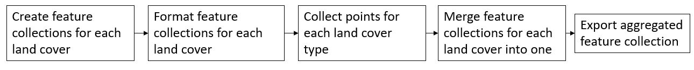
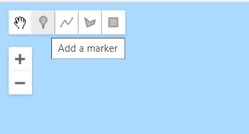
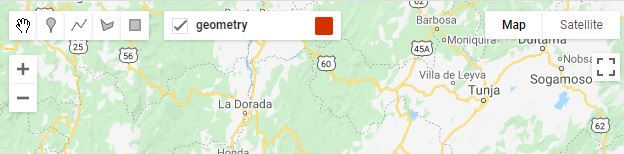
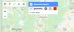
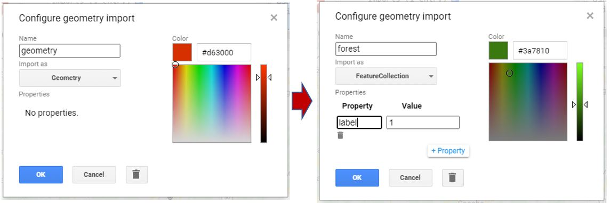
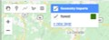
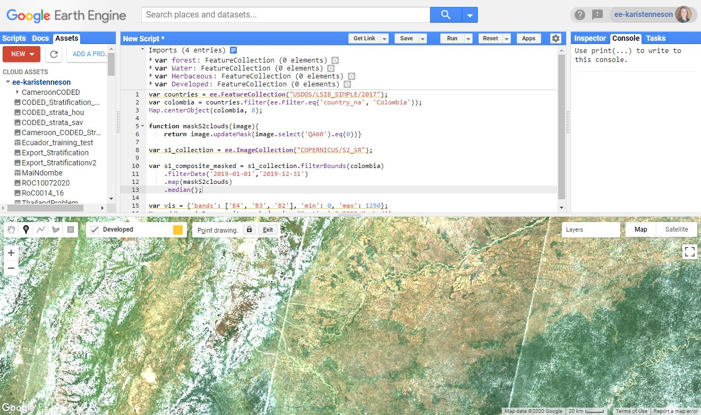
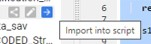
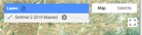

1.2.2 Training Data Collection Using Google Earth EngineӦ
1 Background¶
Training data is instrumental to supervised image classification. The training dataset is a labeled set of data that is used to inform or “train” a classifier. The trained classifier can then be applied to new data to create a classification. For example, land cover training data will contain examples of each class in the study’s legend. Based on these labels, the classifier can predict the most likely land cover class for each pixel in an image. This is an example of a categorical classification and the training labels are therefore categorical. By contrast, a continuous variable (e.g. percent tree cover) can be predicted using continuous training labels.
This tutorial will demonstrate how to collect categorical training data for land cover classification using Google Earth Engine (GEE). Users should adjust the various components to match their project objectives. Here, the process is demonstrated for the country of Colombia and for a simple legend of four land cover classes: Forest, Water, Herbaceous, and Developed.
1.1 Google Earth Engine¶
We will be digitizing training data in Google Earth Engine. Refer to Module 1.1 Image mosaic/composite creation for Landsat and Sentinel-2 in Google Earth Engine for more information and resources for working in this environment.
2 Learning Objectives¶
At the end of this exercise, you will be able to:
Create new feature collections in GEE representing your land cover classes of interest.
Load your Landsat or Sentinel composite to use as background imagery to use as reference.
Collect and export training data for a categorical classification.
2.1 Pre-requisites for this module¶
Google Earth Engine
Have a GEE account.
Completed Module 1.1 Image mosaic/composite creation for Landsat and Sentinel-2
Remote sensing concepts
Basic understanding on theories involved in image classification.
Defining a thematic legend
3. Training Data Collection¶
3.1 Overview¶
The process for collecting training data in GEE are detailed in the steps below. The process can be generally described as three primary steps:
Creating a new feature class for each land cover to store the training data.
Loading a basemap using what you learned in Module 1.1 Image mosaic/composite creation for Landsat and Sentinel-2.
Collecting the training data by manually defining training points.
Exporing the training data.

3.2 Creating new Feature Collections¶
As can be seen in Module 1.2.1 Training Data Collection Using QGIS, training data can be created in a variety of platforms. In this tutorial, you will create training data as using Feature Collections of points with unique land cover labels identified with a ‘label’ attribute. For example, forests can have a ‘label’ attribute of 1, agriculture as 2, and so on. One simple method to develop training data is to simply create a Feature Collection for each land cover using the data and imagery available in Google Earth Engine. This tutorial will demonstrate how to create training data that are point geometries. A similar process can be used with polygon data.
To start, open a web browser and navigate to Google Earth Engine.
Then you will need to define a new Feature Class for each land cover of interest.
While in the Earth Engine, navigate to the drawing tools in the upper left hand corner of the map window. Click the icon to add point markers.

This will add a new Geometry Imports panel in your map window, with a label for the new properties you can now draw in the map window. The default name of this new layer is ‘geometry’.

Hold your cursor over the name ‘geometry’ in this panel until a gear icon appears on the right hand side of the label. Click on the gear to open the panel to edit the layer configuration.

Next give the layer a name related to the land cover of interest, for example ‘forest’.
For this tutorial, we reccomend using this land cover classification key and numeric class codes:
1 Forest
2 Water
3 Herbaceous
4 Developed
Then set the type (import as) to FeatureCollection.
Add a property by clicking on the + Property box.
Give it a ‘label’ property with a unique integer identifier. In this case, 1, will represent forest.
Finally change the color if you like. For example, you can select to use green markers for forest labels.
Click OK to save your changes.
Your panel should look like this:

Back in the map window, hover your mouse over the geomerty imports and click on the option to + new layer.

Repeat steps 3 to 10 until you have a Feature Collection set up for each land cover type of interest.
3.3 Load baselayers¶
Critical to the collection of training data is reference data, and for most purposes it is sufficient to use high-resolution imagery. Two critical factors in the selection of reference data are:
The target classes can be distinguished through visible interpretation.
The time of the reference imagery overlaps the input data used for classification.
There is a basemap of high resolution reference imagery available directly within GEE. The downside is that this is a mosaic of high resolution images, with no information available on the date of aquisition.
To augment the information available in these high resolution image mosaics, it is suggested that you also load the image mosaic that you will use to run the supervised classification. This is the image you created in Module 1.1 Image mosaic/composite creation for Landsat and Sentinel-2 in Google Earth Engine. Then you can toggle between the available high resolution imagery and the imagery composite for the date of interest to ensure that no land cover changes have occured between the dates of the two image aquisitions.
Remember, you want the reference data to match the time period and geographic extent of your study region. Here, the process is demonstrated for Colombia and for the year 2019.
You can create a Sentinel-2 composite for 2019 on the fly and add it to the map. Paste the following code into the code editor window and click on Run to load the composite into the map window.
var countries = ee.FeatureCollection("USDOS/LSIB_SIMPLE/2017");
var colombia = countries.filter(ee.Filter.eq('country_na', 'Colombia'));
Map.centerObject(colombia, 8);
function maskS2clouds(image){
return image.updateMask(image.select('QA60').eq(0))}
var s1_collection = ee.ImageCollection("COPERNICUS/S2_SR");
var s1_composite_masked = s1_collection.filterBounds(colombia)
.filterDate('2019-01-01','2019-12-31')
.map(maskS2clouds)
.median();
var vis = {'bands': ['B4', 'B3', 'B2'], 'min': 0, 'max': 1250};
Map.addLayer(s1_composite_masked, vis, 'Sentinel 2 2019 Masked');

There is also another way to load imagery into GEE, this second option is to load an image from your Assets tab. If you exported an image composite to your GEE Asset folder, you can import that by navigating to the Assets folder. Then hover your mouse over the name of the composite image and select the arrow to import into the code editor. Make sure that the image that you load from your asset folder is defined as “image” so that the GEE code works.

Then copy the following text into the code editor to load it into the map window and click on Run.
Map.centerObject(image, 8);
var vis = {'bands': ['B4', 'B3', 'B2'], 'min': 0, 'max': 1250};
Map.addLayer(image, vis, 'image');
You can also visit the official Earth Engine resources for information on finding and displaying Image Collections.
3.4 Collect training data¶
Once you have decided on reference imagery then it is time to start collecting training data. Going class by class, navigate your study region collecting point data. Here are a few considerations:
Training data should be representative of your entire study region. This means that collecting more data across the study area is better than a few large training areas.
Be sure to include examples on the edge of class boundaries, as these areas will be most challenging to distinguish in the classification stage.
There is no magic number for an adequate number of training points. Be prepared for this to be an interative process in which you collect training data, perform your analysis, and then collect more training data to address misclassification errors.
Take your time - this dataset will be invaluable to your research and can be to others as well.
Select the land cover layer in the Geometry imports panel in the map window.
Select the point marker and click in the map to add points of that land cover. You can toggle the image composite on and off in the Layers panel. You can also toggle between the map and satellite composite in the upper righthand corner of the map window.

If you drop a point accidentally, you can move it or delete it with the pan hand.
Repeat the process until you have many samples of each of the four land cover classes throughout your study region. It is advised to save the script during the process by selecting the Save button at the top of the code editor window.
3.5 Visualizing training data¶
Once you have collected training data for each class, it helps to style them to see the distribution across the study area. Ideally, you want to have training points that are representative of the variability in the classes. Here, that means that we want to have enough forest, water, herbaceous, and developed points to ensure they fully represent these classes across Colombia.
Zoom out to the extent of the study area, in this case Colombia.
Take some time to look at your sample and ensure there are not any major “gaps” in training data.
3.6 Merging and exporting data¶
The final step is to merge each land cover feature flass into one final feature class with all land covers aggregated. Then export the data.
The training features can be combined with the ‘merge’ method. For example, for ‘Forest’, ‘Water’, ‘Herbaceous’, and ‘Developed’ all represent Feature Collections you can enter the following code. Remember JavaScript is case sensitive so double check the capitalization between your merge statements and your geometry names.
var training = Forest.merge(Water)
.merge(Herbaceous)
.merge(Developed);
The outputs should then be saved as an Earth Engine asset for classification in GEE, or exported to your Google Drive for classification using a desktop GIS.
2a. You can export to Asset with the following code.
Export.table.toAsset({
collection: training,
description: 'LCsample2019',
assetId: 'LCsample2019'
});
2b. You can export to Google Drive with the following code.
Export.table.toDrive({
collection: training,
description: 'LCsample2019',
fileFormat: 'SHP'
});
Then click Run to execute. This will allow you to go to the Tasks tab and run the export. If you need a refresher on how to complete the export process, revisit Module 1.1 Image mosaic/composite creation for Landsat and Sentinel-2 in Google Earth Engine.
4. Frequently Asked Questions¶
Why are we using point geometries rather than polygons?
Polygon data can also be used as training data, but keep in mind that spatial autocorrelation will result in redundant information derived from each polygon. We therefore recommend collecting point samples that are representative of the entirety of the data rather than a few polygons.
How should I choose what data to use as reference?
The reference data should overlap in time and space with the data used in your analysis. If there are multiple data sources meeting this criteria, then the user should choose the data they find easiest to interpret based on their classification legend.
Does training data need to be derived under a probability-based sampling design?
No, there is no need to obtain training data using a probability-based design. However, if training data was created this way (e.g. an interpreted simple random sample), there is no reason it cannot be used for classification.
How many points do I need for each class?
There is no magic number for the number of training points for each class. It is generally recommended to use an iterative process, in which additional training data is added after performing a classification, then the classification is created again the process repeats until the results are deemed adequate.
Can training data be split to use part for validation?
If the training data were collected opportunistically, or in other words not using a probability sample, then it is generally not recommended to use it for validation since it will introduce bias.